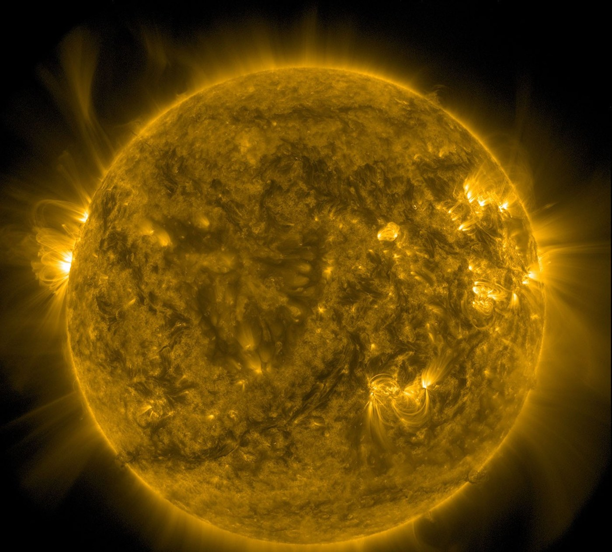
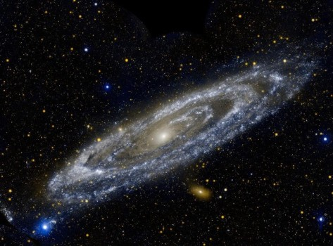
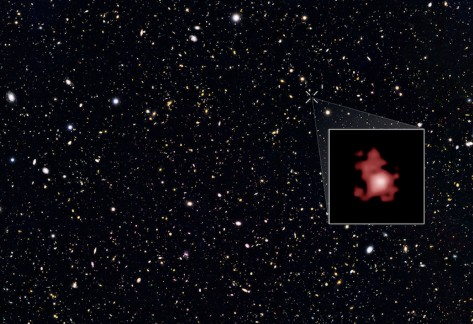
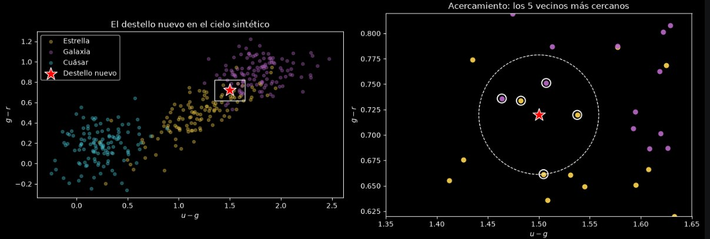
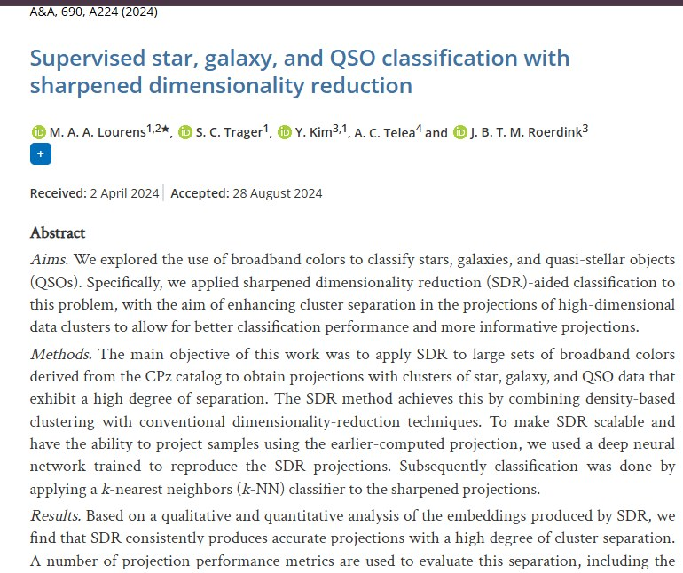
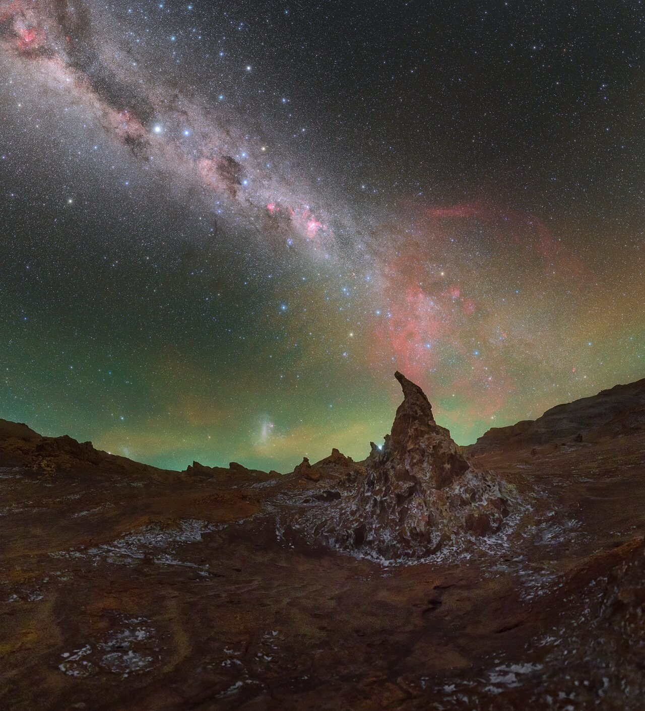
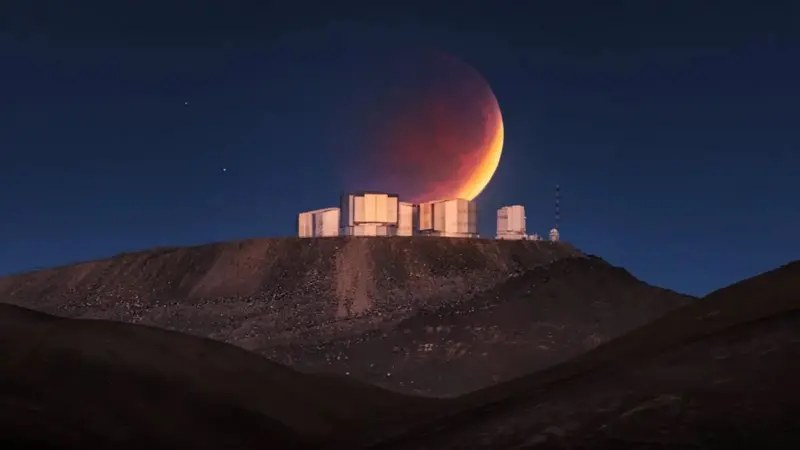

En memoria de esas estrellas brillantes que alguna vez estuvieron en el cielo o en la tierra, y que nos siguen contando historias del pasado.
En homenaje a todos los pies cansados que jamás dejarán de buscarlas.
Nadia Ramos González
Había una vez un desierto…
…tan seco y tan alto, que desde ahí se podía ver el pasado.
Inspirada en el documental
Nostalgia de la luz de Patricio Guzmán
una meditación sobre las posibilidades y limitaciones del machine learning en relación con las estrellas…
la violencia, la memoria y el saber
…y aun así tardan siglos, a veces millones de años,
en atravesar la oscuridad que nos separa.
En el espacio, distancia y tiempo se vuelven casi lo mismo.
1 año luz = la distancia que recorre la luz en un año
≈ 9,500,000,000,000 km
Una estrella a cien años luz es una imagen de hace cien años.

El Sol que vemos
es el Sol de hace 8 minutos
La estrella más cercana nos muestra
cómo era hace poco más de 4 años

La luz que hoy recibimos de Andrómeda salió de ella hace
2.5 millones de años
cuando en la Tierra apenas aparecían los primeros humanos.

una carta de hace más de 13,000 millones de años
Mirar el cielo es leer cartas que fueron escritas hace mucho tiempo.
Algunas de las estrellas que vemos esta noche podrían ya no existir, pero su luz sigue viajando, y sigue llegando.
¿Y esto qué tiene
que ver con KNN?
Desde aquí, una estrella, una galaxia y un cuásar pueden verse igual:
un pequeño punto de luz.
Una esfera de gas que brilla por fusión nuclear. Las que vemos están en nuestra galaxia.
cientos o miles de años luz
Miles de millones de estrellas, gas y polvo unidos por la gravedad.
millones de años luz
El núcleo brillantísimo de una galaxia lejana, alimentado por un agujero negro supermasivo.
miles de millones de años luz
Saber qué es cada destello es saber desde qué tan atrás en el tiempo nos está hablando.
Descomponer la luz de cada uno sería la forma precisa de saberlo… pero hay millones.
Lo que sí tenemos son sus colores.
Hacemos lo que haría cualquiera frente a alguien que no conoce: lo comparamos con quienes ya conocemos. Buscamos los destellos cuyos colores más se le parecen, les preguntamos qué son y dejamos que voten.
Eso es KNN: reconocer algo por sus vecinos.
Todo lo que KNN sabe del cielo es lo que alguien observó y nombró antes. Esa memoria es el conjunto de entrenamiento
donde cada $\x_i$ es el vector de colores de un destello y $C$ = {Estrella, Galaxia, Cuásar}.
Cuando llega un destello nuevo $\x_q \in \R^d$, queremos predecir su etiqueta $\hat{y}_q$.
KNN no aprende una regla: recuerda.
Una función $d:\R^d\times\R^d\to\R$ es una métrica si para todo $\x,\mathbf{y},\mathbf{z}$:
Distancia de Minkowski de orden $p\ge 1$:
Para $p\ge1$ es métrica (desigualdad de Minkowski). Para $0<p<1$ falla la desigualdad del triángulo.
Ordenar por $d_2$ equivale a ordenar por $d_2^2$: conviene evitar las raíces.
Sea $\sigma$ una permutación de $\{1,\dots,n\}$ tal que
El vecindario del destello nuevo son sus $k$ vecinos más cercanos:
Si en la posición $k$ hay empate,
la permutación $\sigma$ no es única: el vecindario depende de cómo se rompa ese empate, por ejemplo por índice o al azar.
La etiqueta predicha es la clase más frecuente en el vecindario:
$\Ind(\cdot)$ vale 1 si la condición se cumple y 0 en otro caso.
Equivalentemente, KNN estima la probabilidad de cada clase:
Si algún $d(\x_q,\x_i)=0$, se asigna la clase mayoritaria entre los puntos que coinciden con $\x_q$.
Sea $C^{*}=\argmax_{c}\sum\Ind(y_i=c)$. Hay empate si $\lvert C^{*}\rvert>1$. Un $k$ impar sólo lo evita con dos clases; en nuestro cielo hay tres.
Si $y_i\in\R$, en lugar de votar se promedia:
En astronomía se usa para estimar el redshift: qué tanto se estiró la luz durante su viaje, y por lo tanto qué tan lejos y qué tan atrás en el tiempo está una galaxia.
Cada variable aporta un término que depende de su escala: si una toma valores mucho mayores, domina la suma y la distancia ignora al resto.
Min-Max
Estandarización
Los parámetros se calculan sólo con el entrenamiento y se aplican después al punto de consulta.
Complejidad. Entrenar es sólo almacenar: memoria $O(nd)$. Clasificar un destello: $O(nd)$ en distancias y $O(n\log n)$ ordenando, u $O(n\log k)$ con un montículo. Para millones de objetos: kd-trees.
Elección de $k$. Con $k=1$ la frontera sigue cada punto (sesgo bajo, varianza alta). Con $k=n$ siempre predice la clase más frecuente (sesgo alto, varianza baja). En la práctica, $k$ se elige por validación.
Teorema (Cover y Hart, 1967). Si $R^{*}$ es el error de Bayes con $M$ clases, cuando $n\to\infty$ el error $R$ de 1-NN cumple
Con suficiente memoria, recordar al vecino más parecido comete a lo más el doble de errores que el mejor clasificador posible.
Maldición de la dimensionalidad: en dimensión alta, el vecino más cercano y el más lejano quedan casi a la misma distancia.
Seis destellos conocidos, con dos colores normalizados de 0 a 10 (valores ilustrativos):
$X_1$: color $u-g$ · $X_2$: color $g-r$
| Destello | $X_1$ | $X_2$ | Clase |
|---|---|---|---|
| A | 1 | 2 | Cuásar |
| B | 2 | 1 | Cuásar |
| C | 4 | 6 | Estrella |
| D | 5 | 4 | Estrella |
| E | 8 | 8 | Galaxia |
| F | 7 | 9 | Galaxia |
Destello nuevo: $\x_q=(3,4)$, con $k=3$ y distancia euclidiana.
\[ N_3(\x_q)=\{D,\ C,\ A\} \]
$\hat{y}_q$ = Estrella, $\hat{P}=\tfrac{2}{3}$
Su carta viene de cerca, de nuestra propia galaxia.
$N_4(\x_q)=\{D,C,A,B\}$: dos votos para Estrella y dos para Cuásar. Hay empate: $C^{*}$ = {Estrella, Cuásar}.
Voto ponderado
Estrella: $\ \dfrac{1}{2.00}+\dfrac{1}{2.24}\approx 0.947$
Cuásar: $\ \dfrac{1}{2.83}+\dfrac{1}{3.16}\approx 0.670$
Reducir $k$ (nuestra implementación)
Se descarta al vecino más lejano, $B$, y se vota con $k=3$: dos estrellas contra un cuásar.
Ambos criterios: Estrella.


Lourens et al. (2024), Astronomy & Astrophysics: clasificación de estrellas, galaxias y cuásares sólo con sus colores, con KNN después de una reducción de dimensionalidad.
99.7%
estrellas
98.9%
galaxias
98.5%
cuásares
KNN también se usa para estimar el redshift fotométrico: qué tan lejos, y qué tan en el pasado, está algo sin descomponer su luz.

DONDE LA DISTANCIA DE MINKOWSKI SE HACE CERO
El desierto de Atacama

Ahí se ubican algunos de los observatorios más importantes del mundo, como ALMA, el proyecto astronómico más grande que existe, y el VLT.
Uno de los lugares más secos y con el cielo más limpio del planeta. Desde ahí se estudia el pasado del universo.
¿Por qué desastre?
Como un arqueólogo verbal, me apropio de la palabra por su carga etimológica:
des- (peyorativo) + astro “estrella, planeta”
del latín astrum y del griego astron
“El sentido es astrológico, de una calamidad que se atribuye a la posición desfavorable de un planeta”.
— Brad Epps (2016)
11 DE SEPTIEMBRE DE 1973
Salvador Allende
1908 – 1973
Augusto Pinochet
1915 – 2006
Ellasestudianelpasado
deunamaneradiferente.
Hoy explicamos un algoritmo que no aprende reglas, sino que recuerda.
KNN no puede reconocer nada que alguien no haya visto, medido y nombrado antes. Sin memoria, KNN no puede decir nada.
Es, en el fondo, un algoritmo de memoria obstinada.
Los astrónomos de Atacama reconstruyen el pasado a partir de la luz que logra llegar hasta nosotros. Las mujeres de Calama lo reconstruyen con sus manos, fragmento por fragmento.
En México conocemos bien esa búsqueda.
Un modelo no encuentra a nadie: quienes encuentran son ellas. Pero el poder de estas herramientas está también en lo que nos ayudan a mirar y en los temas a los que nos vuelven sensibles.
Hoy, con KNN, sólo podemos clasificar estrellas. Ojalá algún día sirvan también para ayudar a que más personas vuelvan a casa.
Recordar ayuda a construir el futuro. — Patricio Guzmán
«Pensé que el universo era un vasto sistema de señales, una conversación entre seres inmensos.»
Octavio Paz, «El ramo azul»
¡Hora del Kahoot!
están lloviendo preguntas